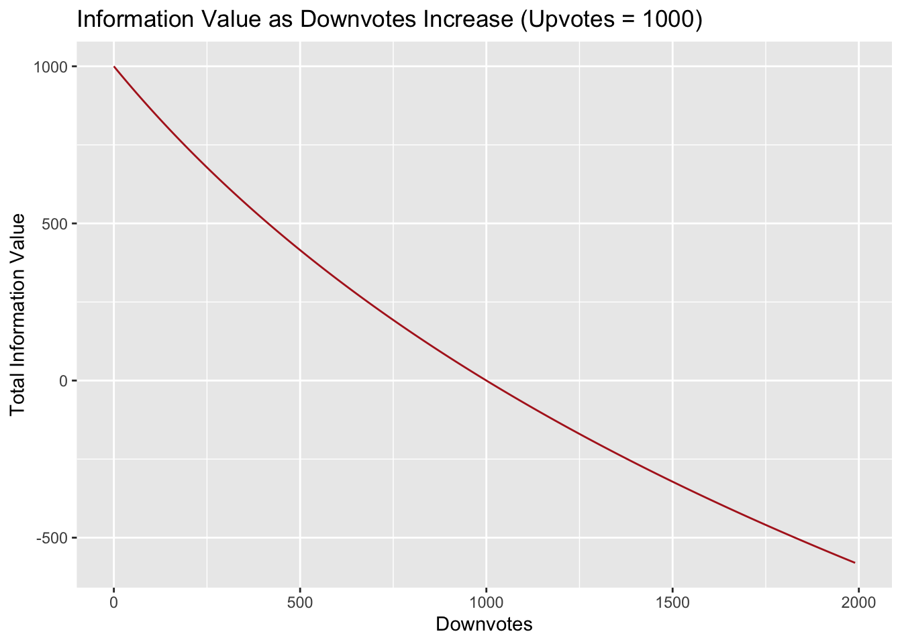

Chapter 4 Cognitive Dissonance and Information Rate
This document introduces the theory behind the entropy ranking formula described in [2023-10-10-entropy-ranking-formula-summary.md].
The goal of the global brain algorithm is to focus users’ attention on posts that reduce “cognitive dissonance” – difference of belief that exist only exist because people have been exposed to different information. When a note on a post changes the probability that users upvote the post, then there is cognitive dissonance in proportion to the number of people who voted on the post without being shown the note. Information theory lets us easily quantify this cognitive dissonance using the concept of entropy.
In information theory, information is simply the reduction of entropy. So reducing cognitive dissonance can also be seen as gaining information. So the goal of the global brain algorithm should be to direct attention to notes with the greatest potential information gain.
4.1 Key Concepts from Information Theory
Here’s a quick summary of some basic concepts of information theory, building up from simple to complex concepts.
surprisal: how surprised I am when I learn that the value of X is x:
- \[Suprisal(x) = -lg~P(X=x)\]
entropy: how surprised I expect to be:
\[ \begin{aligned} H(P) &= ùîº_P -lg P(X) \\ &= ∑_x P(X=x) × -lg~P(X=x) \\ \end{aligned} \]
- cross-entropy: how surprised I expect Bob to be (if Bob’s beliefs are q instead of p):
\[ \begin{aligned} H(P,Q) &= ùîº_P -lg Q(X) \\ &= ∑_x P(X=x) × -lg~Q(X=x) \end{aligned} \]
- relative entropy or KL divergence: how much more surprised I expect Bob to be than me:
\[ \begin{aligned} Dkl(P || Q) &= H(P,Q) - H(P,P) \\ &= ∑_x P(X=x) × lg~\frac{P(X=x)}{Q(X=x)} \end{aligned} \]
When dealing with binary variables then these formulas can be written as:
- entropy:
\[ H(p) = - p × lg~p - (1-p) × lg~(1-p) \]
- cross-Entropy:
\[ H(p,q) = -p × -lg~q - (1-p) × lg~(1-q) \]
- relative Entropy / KL-divergence:
\[ Dkl(p||q) = - p × lg~\frac{p}{q} - (1-p) × lg~\frac{1-p}{1-q} \]
4.2 Surprisal as a Measure of Error
Surprisal can be thought of, for our purposes, as a measure of the “error” of a prediction. Whenever we predict something is very unlikely to happen, and it happens, then there is a large amount of surprisal, or error. If we predicted it was likely to happen, and it happens, there is only a small amount of error.
For example, suppose we predict that the probability of a user upvoting a post is \(p\). Then suppose there are actually \(upvotes\) upvotes and \(downvotes\) downvotes. What is the total error of our predictions?
Every time there is an upvote, surprisal is \(-log(p)\). Our estimate of the probability of a downvote is \(1-p\), so whenever there is a downvote surprisal is \(-log(1-p)\).
So our total error is:
\[ upvotes × -log(p) + downvotes × -log(1-p) \]
Since \(upvotes ≈ votesTotal×p\), and \(downvotes ≈ votesTotal×(1-p)\) our total error is approximately:
\[ \begin{aligned} & votesTotal × p × -log(p) + votesTotal × (1-p) × -log(1-p) \\ & = votesTotal × H(p) \end{aligned} \]
In other words, our error is roughly entropy per vote, times the number of votes.
4.3 Total Cross Entropy
Let’s say Alice estimates the probability of an upvote to be \(q\), but Bob thinks the probability of an upvote is \(p\). So Bob’s measure of Alice’s error will different from Alice’s expectation of her own error! Bob’s measure of Alice’s error is:
\[ \begin{aligned} &~~upvotes × -lg(q) + downvotes × -lg(1-q) \\ &= votesTotal×p × -lg(q) + votesTotal×(1-p) × -lg(1-q) ) \\ &= votesTotal×( p×-lg(q) + (1-p)×-lg(1-q) ) \\ &= votesTotal×H(p,q) \\ \end{aligned} \]
\(H(p,q)\) is the cross entropy, Bob’s estimate of how surprised Alice will be on average. Bob’s measure for Alices’s total surprise is \(votesTotal×H(p,q)\).
In our case, Alice represents the average uninformed user (users who haven’t seen the note on a post), and Bob represents the informed user. The total cross entropy is Bob’s measure of Alices’s total error – or in other words, the informed user’s measure of the uninformed user’s total error.
4.4 Total Relative Entropy = Cognitive Dissonance
The difference between \(H(p,q)\) and \(H(p)\) is the relative entropy, also known as the Kullback–Leibler divergence or KL-divergence. It can be thought of as “how much more surprised I expect Alice to be than Bob”.
A very interesting property of relative entropy is that it is never negative. It doesn’t matter whether \(p\) is greater or less than \(q\). Plug in different values to the formula to see.
So Bob measure of Alice’s error is always greater than his measure of his own error as long as \(p ≠ q\). He always expect Alice to be more surprised than him. That is because presumably Bob thinks he knows something Alice doesn’t know. If Bob thought Alices’s estimate \(q\) was better than his estimate \(p\), Bob would change his estimate to \(q\)!
Relative entropy is zero if \(p\) and \(q\) are the same, because cross entropy \(H(p,q)\) just equals entropy \(H(p)\) when \(p=q\).
If we take Bob’s measure of Alices’s total error, minus his measure of his own total error, we get the total relative entropy: how much more error Bob expects for Alice than he would expect if Alice knew more.
This total error is our measure of cognitive dissonance.
\[ \begin{aligned} cognitiveDissonance &= votesTotal × H(p,q) - votesTotal × H(p) \\ &= votesTotal × ( H(p,q) - H(p) ) \\ &= votesTotal × Dkl(p || q) \end{aligned} \]
So whenever the global brain learns that a note has change the probability of an upvote on a post, \(p\) becomes different from \(q\) and therefore cognitive dissonance is created. But as users are shown the note and change their votes so that \(q\) once again approaches \(p\), cognitive dissonance is reduced.
4.5 Attention
The global brain can’t eliminate all cognitive dissonance – it can only reduce it as much as possible.
Now the global brain is working with a limited resource: attention. Whenever the global brain shows a post to a user, it is is “spending” a certain amount of attention. Showing a post at the top of a forum home page, for example, gives it greater attention than showing it in the number two spot. But how much more attention? We need to weigh each position on the home page by the amount of attention we think that position receives in order to measure weighted impressions. We’ll discuss the formula for measuring attention in another post.
4.6 Vote Rate
Once we have a weight of measuring attention, we can calculate the vote rate of a post – the number of votes it gets per unit attention.
\[ \begin{aligned} voteRate &= \frac{votesTotal}{attentionTotal} \\ &= \frac{upvotes + downvotes}{attentionTotal} \end{aligned} \]
For example, suppose a post without a note is given 10000 weighted impressions receives 900 upvotes and 100 downvotes. It’s vote rate is:
\[ \begin{aligned} \frac{900~upvotes + 100~downvotes}{10000~weightedImpressions} = 0.1~\frac{votes}{weightedImpression} \end{aligned} \]
The vote rate can be thought of as a measure of relevance that is independent of upvote probability. A post containing disputed information may have a very high vote rate because there is a high level of agreement that the claims made in the post are relevant, but disagreement on whether they are accurate. Popular and uncontroversial content may have a high vote rate and a high \(p\). Content that is uncontroversial but of interest to only a small group may have a low vote rate and a high \(p\), and so on.
4.7 Vote Change Rate
If 10000 impressions on the post produced 1000 votes, then we would assume another 10000 weighted impressions to new users would produce another 1000 votes. But what about another 10000 impressions to users who already voted on the post? How many vote changes do we expect.
There are many things that could effect users decision to change a vote. But a starting assumption is to assume that users beliefs would be the same whether or not they have already voted. That is, whatever belief states users hold that cause them to decide to upvote/downvote would be the same for users who are shown the post with the note, whether or not they have already voted on the post without the note.
So we assume that 1000 people choose how they want to vote, but not all of them actually change their vote because their current vote is already what they want it to be.
Of the 1000 users, we expect 200 to choose “upvote”, and 800 to choose “downvote”. Since 900 previously upvoted, so only 900-200=700 change their vote to a downvote. So we expect \(votesTotal*(p-q)\) vote changes.
So the expected rate at which votes change (per unit of attention) is:
\[ \begin{aligned} voteChangeRate &= votesTotal×\frac{p-q}{attentionTotal} \\ &= (p-q)×voteRate \\ &= (.2-.9) * .1 \\ &= -.07~\frac{votes}{weightedImpression} \end{aligned} \]
As the global brain gathers data about how users actually change their votes, the estimated vote change rate can be adjusted.
4.8 Information Rate
Our next task is to estimate the reduction of cognitive dissonance per unit of attention directed at a post with a note.
Suppose that of the 1000 votes the above post received, 90% were upvotes. But then the global brain discovers that a certain note, when shown along with the post, reduces the upvote probability to 20%, without changing the vote rate.
The total cognitive dissonance is
\[ \begin{aligned} cognitiveDissonance &= votesTotal × Dkl(p || q) \\ &= votesTotal × ( p × lg(p/q) + (1-p) × lg((1-p)/(1-q)) ) \\ &= 1000 × ( .2 × lg(.2/.9) + .8 × lg(.8/.1) ) \\ &= 1966.01 \end{aligned} \]
So after another, say, 1000 weighted impressions (\(deltaAttention=1000\)) the total upvotes will be:
\[ \begin{aligned} newUpvotes &= votesTotal*q + (p-q)×voteRate×deltaAttention \\ &= 900~votes + -.07~\frac{votes}{weightedImpression} × 1000~weightedImpressions \\ &= 900 - 70 = 830 \end{aligned} \]
The new upvote probability \(q_1\) will be approximately
\[ \begin{aligned} q_1 &≈ \frac{upvotes}{votesTotal} \\ &= \frac{votesTotal×q + voteChangeRate×deltaAttention}{votesTotal} \\ &= q + \frac{ voteChangeRate×deltaAttention}{votesTotal} ) \\ &= .9 + -.07 × 1000/1000 = .83 \end{aligned} \]
The new cognitive dissonance will therefore be
\[ \begin{aligned} & votesTotal \times DKL(p, q_1)\\ & = votesTotal \times DKL(p, ( q + voteChangeRate/votesTotal ) )\\ & = votesTotal \times DKL(.2, .83 ) \\ & = 1376.95~bits \end{aligned} \]
The table below shows cognitive dissonance falls as users change upvotes to downvotes, reaching zero when \(p=q\) and therefore \(upvotes=p*votesTotal=200\).
| weightedImpressions | q | upvotes | dissonance | informationGain |
|---|---|---|---|---|
| 0 | 0.90 | 900 | 1966.01500 | NA |
| 1000 | 0.83 | 830 | 1376.94994 | 589.06506 |
| 2000 | 0.76 | 760 | 1004.37259 | 372.57734 |
| 3000 | 0.69 | 690 | 736.86616 | 267.50644 |
| 4000 | 0.62 | 620 | 532.74682 | 204.11933 |
| 5000 | 0.55 | 550 | 372.17368 | 160.57315 |
| 6000 | 0.48 | 480 | 244.58382 | 127.58985 |
| 7000 | 0.41 | 410 | 144.30325 | 100.28057 |
| 8000 | 0.34 | 340 | 68.92023 | 75.38302 |
| 9000 | 0.27 | 270 | 19.09095 | 49.82928 |
| 10000 | 0.20 | 200 | 0.00000 | 19.09095 |

The reduction in cognitive dissonance after the first 1000 weighted impressions is:
\[ \begin{aligned} &votesTotal * DKL(p, q) \\ &- votesTotal * DKL(p, q_1) \\ &= 1966.01 - 1376.95 bits \\ &= 589.07 bits \end{aligned} \]
Which reduces to an information gain rate, or simply information rate, of approximately:
\[ informationRate ≈ \frac{589.07 bits}{1000 weightedImpressions} ≈ .589~\frac{bits}{weightedImpression} \]
The expected reduction of entropy per unit of attention can be written as:
\[ \begin{aligned} q_{t+1} &= \frac{q_t + voteChangeRate}{votesTotal} ) \\ informationRate &= votesTotal×(p×log~\frac{q_{t+1}}{q_t} + (1-p)×lg\frac{1-q_{t+1}}{1-q_t} ) \end{aligned} \]
As \(q_t\) approaches \(p\) the information rate falls until it reaches 0 when \(q_t==p\), as shown in the chart below:

NOTEs/TODOS:
This assumes a constant vote change rate, so upvotes move linearly from \(q*votesTotal\) to \(p*votesTotal\). However, in reality what we should see is a decaying growth rate. However, it makes little difference in practice.
with this model, the total change in cognitive dissonance by the time \(p = q\) is exactly equal to the starting cognitive dissonance.
voteChangeRate will change over time as more and more users see the post but don’t change their vote. We can use a moving average or build in a fatigue model